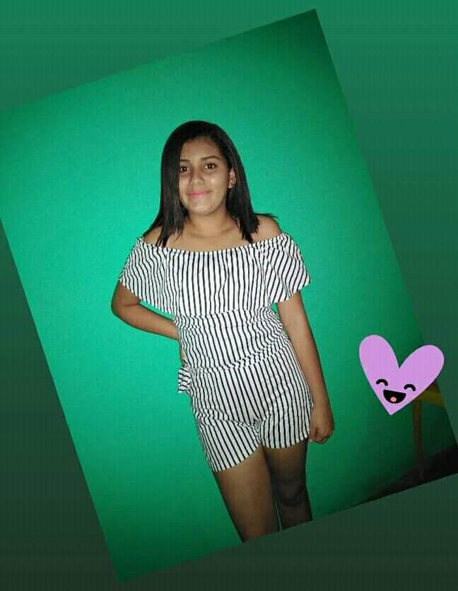

Esta pagina web es para poder contar como conoci, me enamore y enamore a la chica mas hermosa de mi vida, la chica que siempre esta para mi a pesar de todo,
la que siempre me apoya y aconseja. Por todo esto estoy enamorado de ti ANGELA JAMILETH VERA SALAZAR espero poder estar mucho tiempo a tu lado, vivir muchos
momentos contigos no importa si son buenos o malos lo importante es estar contigo TE QUIERO.
Otro motivo de esta pagina web es poder ir agregando todo esos momentos que pasaremos juntos aqui ya sea con palabras o imagenes para tenerlos de recuerdo.

¿Como la conoci?
Recuerdo que fue un 30 de noviembre del 2019 aquel dia era el bautizo del hijo de mi primo, y me invitaron a la fiesta que le iban a realizar,
pero yo no iba a ir porque estudiaba hasta los sabados en la universidad y salia a las 3 p.m de clases pero me prima me insistio en que asista
a la fiesta por lo que llegando a samborondon cercas de las 5 p.m le dije a mi madre donde iba a ir y todo y ella me dijo que estaba bien que podia ir.
Entonces me decidi y fui, ya estando en la casa me sentia super cansado sin ganas de hacer nada, no me daba ni cuenta de las personas que llegaban,
eran alrededor de las 9 creo o no recuerdo bien en eso miro hacia el frente de donde estaba sentado y veo a una chica con un vestido o nose como
llamarlo a lo que llevaba puesto pero era de rayas negras y blancas (adjunto foto), no podia ver muy bien su cara porque ella estaba sentada con su mama y unas
otras personas lo unico que distingue fue su cabello corto.
Yo queria ver quien era porque me llamo mucho la antencion entonces me decidi en ir a la cocina porque ella estaba sentada cerca de ahi y no recuerdo que fui a hacer pero lo importante fue que pude mirar a la chica y me gusto, lo primero que
pense que era que ella tenia mi edad y era amiga de mi prima con la cual yo estuve toda la noche conversando pero jamas le dije nada a
mi prima sobre y a la final se fue de la fiesta y yo pense que jamas la volveria a ver porque aveces asi sudece te gusta alguien pero solo vez a esa persona
una vez en la vida.
¿Como le hable?
Ya habia amanecido eran alrededor de las 7 desayune y me regrese a samborondon sin haber dormido casi nada a lo que llegue a mi casa me puse a hacer unos deberes
y luego le escribo a mi prima y le conte sobre la chica misteriosa de la fiesta que me gusto, estuvimos hablando un rato hasta que le dije que me pase
el numero de la chica pero mi prima me dijo que le preguntaria a ella para ver si me lo podia pasar, paso un rato y llego el mensaje de mi prima con su numero
espere que pase un rato y le escribi y comenzamos como una conversacion normal.
¿Como nos enamoramos?
Siempre es dificil conquistar a una persona sea del genero que sea, pero puedo decir que esta fue mas dificil les cuento:
Al principio fue normal como dos personas que sea estan conociendo con preguntas sobre la vida del otro y asi estuvimos un tiempo, pero como sabemos esas
preguntas se acaban y llego ese tiempo entonces aveces no teniamos que decirnos dado que Jamileth no era muy abierta o comunicativa, mejor dicho yo no le gustaba ni un poco
por eso ella era pero a mi me gustaba y yo queria gustarle a ella, con el pasar de los dias solo eran mensajes de hola, que haces y cosas asi super
aburridas.
Pero a mi no me importaba contal de que siga chateando conmigo, yo no le queria preguntar si tenia novio o algo porque ella pensaria que yo la queria conquistar mejor
seguir callado con mis sentimientos y continuaba escribiendole aun que cada dia era peor, segui segui y segui escribiendole hasta que un dia le dije que ella me gustaba sin miedo
a nada y pues no fue como la gran cosa para ella, sigio pasando el tiempo y yo siempre la trataba bonito es decir con mucho respeto para que ella se sienta bien.
Hasta que un dia sucedio lo que tanto espere me mando un mensaje lindo y eso me alegro la vida millon, desde ese dia yo pense que ya le gustaba y
fue asi, me empezo a tratar mejor y yo mucho mas de lo que ya lo hacia nos empezamos a enamorar y actualmente es una de las personas mas importantes en
mi vida no puedo decir las mas importante porque tambien esta mi madre pero si una. Te quiero muchisimo Jamileth y siempre te voy a agradecer cada
mensaje que me envias porque me alegras la vida mi bebe hermosa.